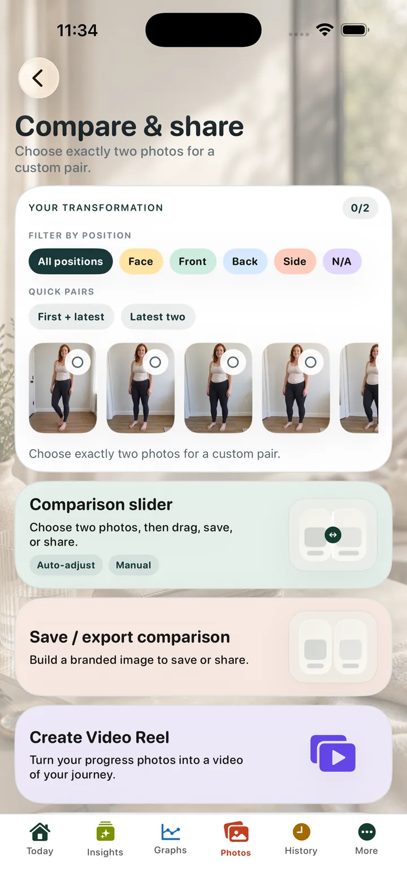
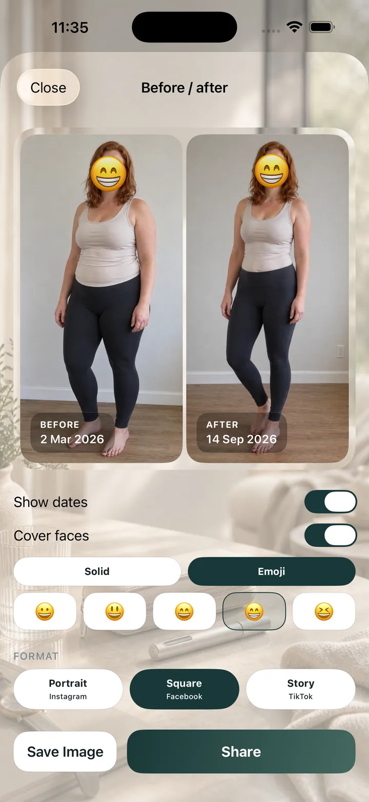
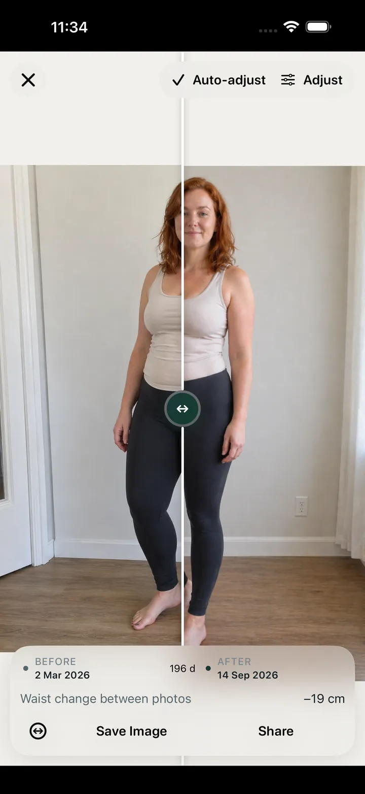

Evolución en fotos
Organiza las fotos de progreso en tu historial
Conserva las imágenes de tu evolución junto a los registros personales en lugar de dejarlas dispersas en el carrete.
El acceso a Apple Health es opcional y de solo lectura. OneGLP solo lee los datos que autorizas y no escribe datos en Apple Health.
Conserva las imágenes de tu evolución junto a los registros personales en lugar de dejarlas dispersas en el carrete.
Utiliza vistas de antes y después y herramientas de comparación. Tú decides cuándo exportar o compartir.
Consulta los cambios visuales junto al historial de medicación, peso y notas sin interpretaciones médicas automáticas.
OneGLP permite guardar fotos de progreso junto al historial de dosis, peso, síntomas y notas. La versión gratuita incluye dos nuevas fotos al mes y Premium permite añadir fotos sin ese límite. Las comparaciones son para revisión personal: no evalúan tu salud ni diagnostican cambios.
Las fotos pueden servirte para revisar cambios visibles junto a tus registros.
La comparación está vinculada al historial privado de peso, dosis y síntomas, y solo se comparte si así lo eliges.
Advertencia: La exposición estimada es un cálculo orientativo para el seguimiento personal, no una concentración sanguínea medida ni un consejo médico. No la utilices para decidir dosis y sigue las instrucciones de un profesional de la salud. Consulta la seguridad médica y la metodología.
| Aplicación | OneGLP |
|---|---|
| Plataforma | iPhone y iPad |
| Categoría | Seguimiento privado de GLP-1 |
| Registros | Dosis, recordatorios, lugares de inyección, peso, síntomas, apetito, alimentación, notas y fotos, con contexto opcional de Apple Health en modo lectura. |
| Cuenta | No se necesita una cuenta dentro de la aplicación para registrar los datos básicos. |
| Privacidad | Los datos se guardan en el dispositivo, salvo que decidas exportarlos, compartirlos o restaurar una copia local. |
| Apple Health | Opcional y solo de lectura. OneGLP puede consultar los datos autorizados, pero no escribe en Apple Health. |
| Exportación | CSV y JSON de los registros principales; Premium incluye informes avanzados y resúmenes PDF para profesionales de la salud. |
| Límites médicos | Una herramienta de seguimiento personal; no permite diagnosticar ni ajustar tratamientos. |
| App Store | Ver OneGLP en el App Store |
Publicado por Steven Good. OneGLP se utiliza para registrar información personal y no sustituye consejos ni instrucciones médicas.



Sí. La aplicación permite guardar y comparar fotos de progreso.
La versión gratuita permite dos nuevas fotos cada mes; puedes seguir viendo, comparando, guardando o compartiendo las anteriores. Premium permite nuevas fotos ilimitadas.
Sí. Puedes revisar las fotos en el contexto del historial de peso y dosis.
No. Son para revisión personal y no constituyen una evaluación médica.
OneGLP ofrece opciones de privacidad al crear y exportar comparaciones cuando estén disponibles.
Puedes exportar registros principales en CSV y JSON; Premium añade informes avanzados y PDF para profesionales de la salud.
No. No se requiere una cuenta dentro de OneGLP para el seguimiento básico.